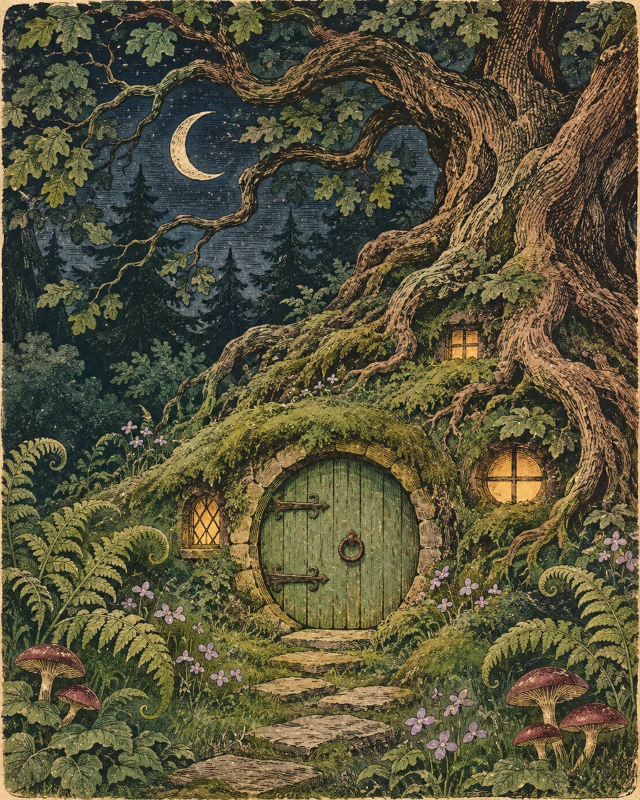

A bit about me
outside of college and code i’m probably reading, outside, or looking up something about space that was supposed to take five minutes :P
i love being deep in thought and i can get passionate about a lot of things. my favorite conversations are the ones where we actually have time to get into the details and both leave with more questions than we started with :)
also yes, the mushrooms and planets on here were very deliberate <3
